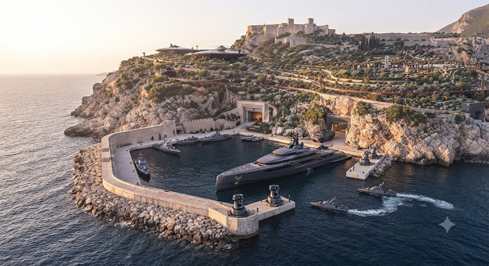

Luce Campus is the sprawling, ultra-advanced headquarters and sovereign heart of the Red Marshal’s dominion spanning over 600 acres area in the Nova capital province, formally known as - "House of Eternal Stewardship". Encompassing a massive, highly fortified zone, the campus seamlessly integrates elite governance, absolute military readiness, and hyper-advanced infrastructure. At its center stands the majestic 45-story Sovereign Spire, flanked by the 25-floor Strategic & Command Tower (West Wing), the grand State Palace Complex, and the Diplomatic & Guest Pavilion.
Designed for total self-sufficiency and supreme security, the campus features a dedicated Air & Mobility Hub with a private airfield runway and rapid action helipads, an 8-floor Sovereign Medical & Bio-Research Tower, and serene recreational sanctuaries including the Rose & Reflection Gardens, a pristine lake, and an athletic zone. Luce Campus is more than a administrative facility — it is a monumental stronghold where absolute authority, statecraft, and technological supremacy converge into eternal command.
The Sovereign Spire
Central Tower of the Empire
The Sovereign Spire stands as the towering architectural anchor of the IDAI Universe, piercing the skyline as the supreme symbol of the Red Marshal’s unyielding authority. Rising majestically with sleek, reinforced glass and titanium-alloy framing, it commands panoramic views of the surrounding sanctuary while housing the primary command systems, administrative hubs, and strategic nerve centers of the empire.
Equipped with advanced rooftop aviation capabilities and absolute atmospheric defense shielding, the Spire serves as the focal point where global oversight and ultimate governance converge. It is more than a headquarters — it is a monolith of eternal power, projecting absolute command from the heart of the Marshal's domain.
Strategic & Command Tower
The Tactical Nerve Center of the Empire
The Strategic & Command Tower stands as the ultimate tactical nerve center within the Luce Campus, engineered to oversee, monitor, and coordinate every strategic operation across the IDAI Universe. Rising with 25 floors of glowing command levels, heavy reinforced titanium infrastructure, and advanced communication arrays, this formidable West Wing facility processes millions of global data streams simultaneously. Crowning its structure are high-frequency satellite communication dishes, secure radar domes, and multi-axis surveillance systems that feed direct intelligence to the Red Marshal and top military commanders, ensuring unbroken operational awareness and absolute tactical supremacy over every province.
Inside its heavily fortified levels, specialized war rooms, cyber-defense centers, and quantum processing arrays operate around the clock to secure the empire against digital and physical threats. Directly connected to the central Sovereign Spire via secure architectural pathways, the Strategic & Command Tower acts as the intellectual shield and sword of the regime. It is a monolithic monument of calculated power and advanced military engineering, where strategic foresight, real-time battlefield coordination, and uncompromising security converge to safeguard the absolute sovereignty of the Red Marshal's domain.
The State Palace Complex
Monument of Formal Hospitality and Grand Authority
The State Palace Complex rises as a majestic 12-floor architectural masterpiece within the Luce Campus, designed with high-ceiling grandeur and breathtaking neoclassical-futuristic elegance. Serving as the primary venue for formal hospitality, state ceremonies, and public-facing sovereign events, this monumental facility projects the unyielding prestige and cultural dominance of the Red Marshal’s empire. Every corridor and hall within the complex is meticulously crafted from the finest polished marble, crystal chandeliers, and reinforced security glass, establishing an atmosphere where absolute power meets refined diplomacy and timeless elegance.
Within its expansive walls, the complex houses world-class amenities dedicated to high-level statecraft and entertaining global dignitaries. Key contents include the breathtaking Grand Living Room for private diplomatic receptions, the colossal State Dining Hall for imperial banquets, an Executive Culinary Kitchen outfitted with advanced gastronomic technology, and formal reception halls designed to host historic summits. The State Palace Complex is more than just a ceremonial venue — it is the majestic public-facing soul of the empire, where statecraft, unmatched luxury, and supreme sovereignty harmoniously converge.
The Diplomatic & Guest Pavilion
Sanctuary of Elite Hospitality and Secure Leisure
The Diplomatic & Guest Pavilion rises as a sophisticated 10-floor architectural marvel within the Luce Campus, meticulously engineered to provide ultra-luxurious, secure accommodations and exclusive leisure for visiting foreign dignitaries, world leaders, and top-ranking military officers. Blending state-of-the-art perimeter security with world-class hospitality, this dedicated pavilion ensures that every high-profile guest experiences absolute safety without ever compromising on elite comfort. Its exterior features pristine reinforced glass panels and sleek modern detailing, matching the grand aesthetic of the surrounding imperial complex while maintaining discreet, impenetrable defense protocols.
Inside its ten meticulously designed levels, the pavilion houses an array of opulent amenities tailored to the highest standards of luxury and recreation. Key contents include ten magnificent Luxury Guest Suites offering panoramic views of the campus, a private high-definition Film Screening & Movie Theater for exclusive screenings, a private Bowling Alley for high-end recreation, and tranquil wellness spas designed for ultimate relaxation. The Diplomatic & Guest Pavilion stands not only as a residence for esteemed visitors but as a testament to the Red Marshal's diplomatic grace, where unyielding security, peerless luxury, and international prestige seamlessly converge.
The Sovereign Medical & Bio-Research Tower
Pinnacle of Advanced Medical Care and Bio-Reconstruction
The Sovereign Medical & Bio-Research Tower stands as an essential 8-floor sanctuary of health, science, and survival within the Luce Campus, engineered specifically to provide on-site advanced medical care, bio-reconstruction, and immediate emergency trauma care for the Red Marshal and high command. Featuring an immaculate exterior of sterile architectural alloys and reinforced antimicrobial glass, the tower is designed to withstand chemical, biological, or radiological disruptions while maintaining absolute internal sterility. Every floor is dedicated to pushing the boundaries of medical science, ensuring that life-support, cellular regeneration, and rapid response systems operate with zero latency and absolute precision.
Within its heavily guarded and strictly sanitized interior, the tower houses cutting-edge technological infrastructure tailored for elite biological preservation and treatment. Key contents include state-of-the-art Surgical Suites equipped with multi-axis robotic arms, advanced Medical Stasis Pods for cellular recovery, high-security bio-laboratories for genetic and tactical medical research, and direct blood and biological reserves dedicated to the Red Marshal and top military leadership. The Sovereign Medical & Bio-Research Tower is more than just a hospital facility — it is an impregnable bastion of life and longevity, where uncompromising security, futuristic bio-technology, and absolute sovereign health converge.
The Air & Mobility Hub
Gateway of Aerial Logistics and Rapid Deployment
The Air & Mobility Hub stands as a vital 4-wide-level terminal and hangar complex complete with an adjacent runway field within the Luce Campus, engineered to manage complete aerial logistics, transport maintenance, and rapid tactical deployment. Featuring expansive structural bays, reinforced tarmac, and heavy industrial-grade security doors, the facility is designed to orchestrate continuous flight operations under any conditions. It serves as the primary transit artery for the Red Marshal and high command, ensuring that air transport, executive aircraft, and tactical helicopters can mobilize across the empire with instantaneous precision.
Within its vast multi-level infrastructure, the hub integrates cutting-edge aviation technology with uncompromising defense protocols to maintain total operational readiness. Key contents include a dedicated Private Airfield Runway for heavy fixed-wing transport, Helipads Alpha and Beta for rapid vertical takeoff and landing, an advanced Tech-Forge & Vehicle Maintenance Bay for continuous fleet servicing, and private transport terminals built for high-security passenger boarding. The Air & Mobility Hub is more than an ordinary airfield — it is a powerhouse of strategic mobility, where supreme logistical efficiency, advanced aerospace engineering, and absolute command readiness converge.
The Naval Port & Maritime Defense Terminal

Sovereign Coastal Defense and Advanced Maritime Logistics Architecture
Positioned along the rugged, sheer coastline of the 600-acre sovereign compound, the naval port serves as the primary maritime gateway and fortified oceanic stronghold for the Red Marshal. Flanked by massive, wave-breaking stone breakwaters and protected by automated tactical defense turrets, the harbor is engineered to accommodate an elite fleet of fast interceptor craft, heavily armored patrol boats, and the Red Marshal's custom stealth mega-yacht. This heavily monitored maritime zone bridges the estate's surface prestige with tactical aquatic dominance, ensuring uncompromised naval mobility and absolute perimeter control across open waters.
Directly carved into the sheer rock cliffs behind the docks are concealed subterranean subterranean slipways and vehicle lift bays, allowing armored amphibious transports and personnel to transition seamlessly between hidden underground tunnels and the open sea under total cover. Reinforced with heavy blast doors and integrated directly with the estate's central intelligence grid, the naval port provides an immediate, highly secure maritime extraction and supply route capable of operating independently during active sieges, naval blockades, or catastrophic threats, guaranteeing absolute strategic autonomy and rapid oceanic deployment at a moment's notice.
The Subterranean Continuity Fortress
The Ultimate Bastion of Off-Grid Survival and Defense
The Subterranean Continuity Fortress plunges 8 massive levels deep beneath the entire Luce Campus ground surface, serving as the ultimate impenetrable bastion of off-grid survival, subterranean transit, and absolute defense. Encased in reinforced ultra-dense concrete, shock-absorbing tungsten-carbide layers, and electromagnetic pulse shielding, this subterranean complex is engineered to withstand direct nuclear strikes, prolonged sieges, and catastrophic global events. It operates as a fully autonomous underworld, completely sealed from the outside environment yet seamlessly connected to every major tower and hub on the surface above through armored lift systems and high-speed subterranean transit tubes.
Deep within its secure, climate-controlled chambers, the fortress houses the life-sustaining infrastructure and strategic reserves required to maintain total operational continuity indefinitely. Key contents include a heavily fortified Sub-Level Doomsday Vault for executive shelter, a self-sustaining Micro-Fusion Power Core supplying clean and limitless energy, a Closed-Loop Water and Air Filtration Plant ensuring absolute environmental purity, a Private Underground Garage for secure subterranean vehicle deployment, and extensive Secure Storage Vaults for critical supplies and archives. The Subterranean Continuity Fortress is more than a bunker — it is the immortal bedrock of the Red Marshal's empire, where supreme engineering, total self-sufficiency, and absolute survival converge into eternal security.
The Grand Archon Tower
The Crown Jewel of the Luce Campus
The Grand Archon Tower stands as the magnificent architectural masterpiece and central landmark of the Luce Campus. Soaring into the sky with towering vertical white-stone spires, tiered glass terraces, and sleek modern detailing, this monumental structure commands the entire estate. Flanked by pristine reflecting pools, dancing water fountains, and manicured lawns, the tower serves as the majestic executive and administrative epicentre of the empire, embodying absolute power, architectural brilliance, and visionary design.
In the sunlit grand courtyard below, polished black executive transport vehicles and custom performance cars gleam on wet stone reflective surfaces, while a tactical helicopter rests on a nearby landing platform. Guarded by elite personnel bearing estate insignia flags, the plaza bridges high-security readiness with breathtaking neo-futuristic luxury. The Grand Archon Tower represents the ultimate synthesis of sovereign authority and architectural majesty, presiding over the campus as a timeless symbol of absolute control and prestige.
The Luce Compound: Comprehensive Master Overview
The Pinnacle of Sovereign Defense, Technology, and Luxury Living
Spanning an immense and meticulously engineered 600-acre coastal estate, the Luce Compound represents the ultimate realization of secure sovereign architecture, seamlessly marrying uncompromising high-security defense mechanisms with world-class ultra-luxury living for the Red Marshal. At ground level and across the sprawling upper tiers, the estate features expansive outdoor amenities including a private airfield runway, rapid action helipads, a private yacht harbor, and breathtaking landscape designs such as the Nova Reflection Gardens, extensive rose gardens, championship tennis courts, and private jogging tracks that wind along the dramatic coastline. Interspersed between these tranquil natural zones are elite architectural marvels like the master-planned residential quarters, an executive private dining hall, an advanced holographic world simulation theater, and a private underground garage that houses an elite fleet of vehicles, all functioning in absolute harmony to provide an environment of peerless comfort, prestige, and seamless daily operational execution.
Beneath the serene surface and manicured landscapes lies a heavily fortified subterranean labyrinth engineered to withstand any conceivable geopolitical siege, natural disaster, or direct military assault. This deep-level infrastructure features the high-command Master Plan War Room, shielded quantum communications relays, the CragNon negotiating chamber, and a self-sustaining off-grid power plant driven by a micro-fusion core alongside comprehensive air and water filtration systems. Critical to its survival utility is the deep-bunker doomsday vault and the high-speed subterranean transit pod rail system, which connects key zones of the compound directly to underground hangars and armored escape channels. Together, this dual-layered ecosystem of surface luxury and subterranean titanium-reinforced defense ensures that the Luce Compound remains an impregnable global stronghold, preserving total tactical autonomy, absolute security, and unyielding operational continuity under any conditions.


.jpg)
.jpg)